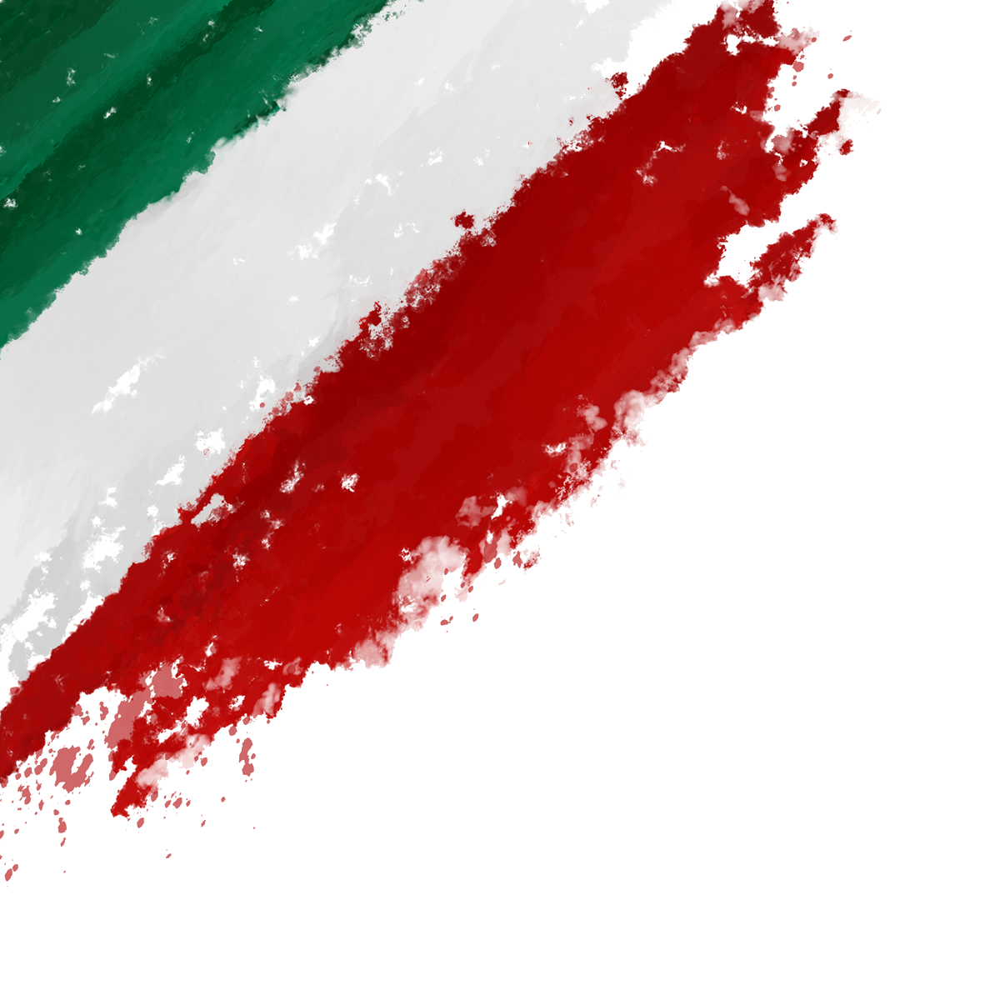
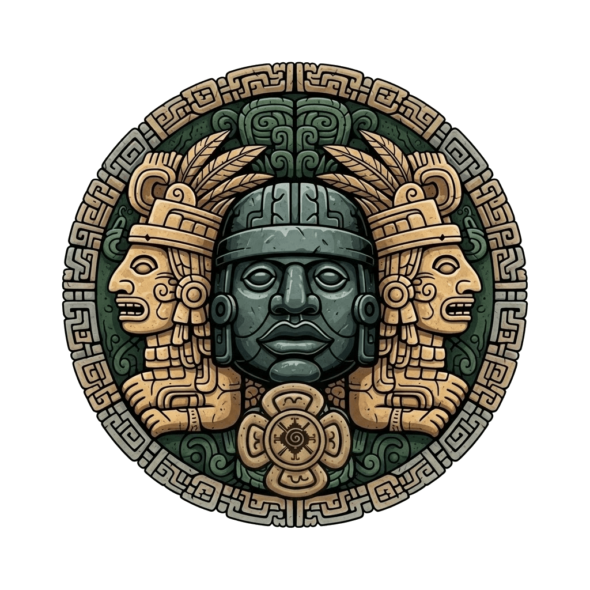

Jurisdicción Originaria Horizontal | Art. 2° CPEUM
Bienvenido al Portal Oficial de la Nación Xochitlamapan. Este espacio digital constituye una extensión de nuestra soberanía territorial y jurídica, fundamentada en el Control de Convencionalidad y el Derecho Humano a la Autodeterminación.